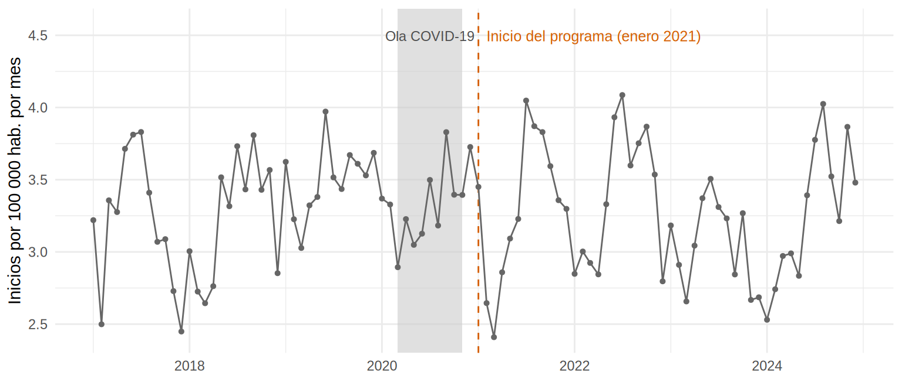
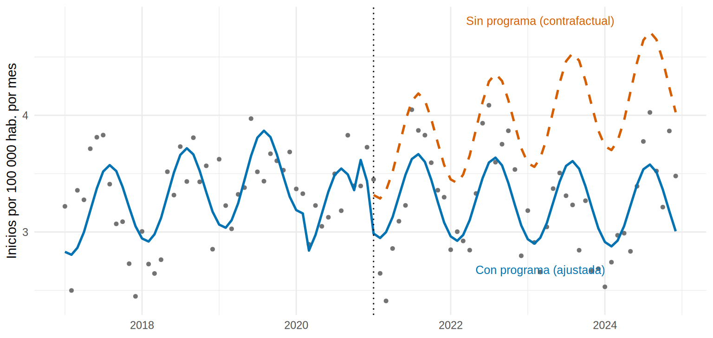

library(tidyverse)
library(sandwich)
source("R/funciones_extra_cap15.R")
serie <- read_csv("Bases/serie_inicio_dialisis.csv", show_col_types = FALSE)
oraculo <- read_csv("Bases/serie_inicio_dialisis_oraculo.csv", show_col_types = FALSE) # la verdad (datos simulados)
its <- serie |> filter(region == "Intervenida") |> preparar_serie()Serie temporal interrumpida: ¿cambió algo cuando empezó el programa?
Nota🩺 Escenario
En enero de 2021 la región Intervenida lanzó un programa de detección temprana de ERC (tamizaje de creatinina y albuminuria en personas con diabetes e hipertensión, derivación oportuna y tratamiento nefroprotector). Cuatro años después, la dirección de salud quiere saber: ¿bajó el número de personas que inician diálisis? No hubo ensayo aleatorizado; lo único que tienes son los 96 conteos mensuales de la región, 48 antes y 48 después del programa.
Lo que vamos a hacer
- Entender la lógica de la serie temporal interrumpida (interrupted time series, ITS): la propia serie, proyectada hacia adelante, hace de comparador.
- Estimar el cambio de nivel y el cambio de pendiente con un modelo de conteos, y dibujar el contrafactual.
- Calcular los casos evitados y comparar con la verdad simulada.
- Revisar cómo se puede fallar y qué no demuestra un ITS.
Paso 1. La idea: la serie contra sí misma
Un ITS es un diseño cuasi-experimental para evaluar una intervención que se aplica a toda una población en un momento conocido (una política, una guía clínica, un programa regional). La lógica es sencilla:
- Con los meses anteriores al programa, estimas la trayectoria que seguía la serie (tendencia + estacionalidad).
- Proyectas esa trayectoria hacia el futuro: es el contrafactual, lo que habría pasado sin programa.
- El efecto es la distancia entre lo observado y esa proyección.
Un programa puede cambiar la serie de dos maneras (y a veces de las dos):
- Cambio de nivel: un salto inmediato, como si la serie se “desplazara” hacia abajo.
- Cambio de pendiente: la trayectoria cambia (la serie deja de subir, o baja más rápido), y el efecto se va acumulando mes a mes.
Para un conteo, el modelo (el del subcapítulo 15.2 más dos términos) es:
\[ \ln E(Y_t) = \ln(\text{población}_t) + \beta_0 + \beta_1\,\text{tiempo}_t + \text{estacionalidad}_t + \beta_2\,\text{post}_t + \beta_3\,\text{t\_post}_t \]
- \(e^{\beta_1}\): razón de tasas por mes antes del programa (la tendencia previa).
- \(e^{\beta_2}\): razón de tasas del salto inmediato (cambio de nivel).
- \(e^{\beta_3}\): razón de tasas por mes del cambio de pendiente.
- El efecto \(k\) meses después del inicio es \(e^{\beta_2 + \beta_3 k}\).
Paso 2. Mirar la serie
ggplot(its, aes(fecha, tasa)) +
annotate("rect", xmin = as.Date("2020-03-01"), xmax = as.Date("2020-10-31"), ymin = -Inf, ymax = Inf,
fill = "grey80", alpha = 0.6) + # ola COVID-19
geom_vline(xintercept = as.Date("2021-01-01"), linetype = "dashed", colour = "#D55E00") +
geom_line(colour = "grey40") + geom_point(colour = "grey40", size = 1.1) +
annotate("text", x = as.Date("2021-02-01"), y = max(its$tasa) * 1.1, label = "Inicio del programa (enero 2021)",
hjust = 0, size = 3.3, colour = "#D55E00") +
annotate("text", x = as.Date("2020-07-01"), y = max(its$tasa) * 1.1, label = "Ola COVID-19", size = 3.1, colour = "grey30") +
expand_limits(y = max(its$tasa) * 1.12) +
labs(x = NULL, y = "Inicios por 100 000 hab. por mes") +
theme_minimal(base_size = 11)
Qué vemos. Antes del programa la tasa sube con los años (y con la onda anual de 15.2); después parece aplanarse. A ojo, cuesta distinguir cuánto es programa, cuánto estación y cuánto ola de COVID. Para eso está el modelo.
Paso 3. Construir las variables
preparar_serie() (nuestra función, como en 15.2) crea las variables del ITS. Fíjate en cómo cambian justo en el mes 49 (enero de 2021):
# A tibble: 6 × 5
fecha mes_num tiempo post t_post
<date> <dbl> <dbl> <int> <dbl>
1 2020-11-01 47 46 0 0
2 2020-12-01 48 47 0 0
3 2021-01-01 49 48 1 0
4 2021-02-01 50 49 1 1
5 2021-03-01 51 50 1 2
6 2021-04-01 52 51 1 3-
tiempo: meses desde el inicio (0, 1, 2, …). Captura la tendencia previa. -
post: 0 antes del programa y 1 desde enero de 2021. Su coeficiente es el cambio de nivel. -
t_post: 0 hasta el primer mes del programa y luego 1, 2, 3, … Su coeficiente es el cambio de pendiente. (Lo definimos para que valga 0 en el primer mes del programa: así \(\beta_2\) es el salto en ese mismo mes y no una mezcla de salto y pendiente.)
Paso 4. Ajustar el modelo
Usamos quasi-Poisson (por la sobredispersión, 15.2), con offset(log(poblacion)), armónicos para la estacionalidad y la variable ola_covid para el evento externo conocido:
[1] 1.57 termino coef RR RR_inf RR_sup p
1 tiempo 0.0033 1.0033 1.0008 1.0058 0.0112
2 post -0.1046 0.9006 0.8200 0.9895 0.0316
3 t_post -0.0040 0.9960 0.9929 0.9992 0.0153Traducimos los coeficientes a lenguaje clínico:
b <- coef(m_its); V <- vcov(m_its)
pend_pre <- exp(12 * b["tiempo"]) - 1 # crecimiento anual antes del programa
pend_post <- exp(12 * (b["tiempo"] + b["t_post"])) - 1 # crecimiento anual después
rr_nivel <- exp(b["post"]); rr_nivel_ic <- exp(confint.default(m_its)["post", ])
rr_pend <- exp(b["t_post"]); rr_pend_ic <- exp(confint.default(m_its)["t_post", ])Qué vemos.
-
Tendencia previa:
tiempoindica un crecimiento de 4.0 % al año antes del programa (la verdad simulada es +4.9 %). - Cambio de nivel: RR = 0.90 (IC 95 %: 0.82 a 0.99): en el primer mes del programa, la tasa fue un 10 % menor que la proyectada. La verdad es 0.905 (−9.5 %).
- Cambio de pendiente: RR = 0.9960 por mes (IC 95 %: 0.9929 a 0.9992). La verdad es 0.995. Acumulado en un año, la tendencia pasa de +4.0 % anual a -0.8 % anual: el aumento se frena (la verdad: de +4.9 % a −1.2 %).
Paso 5. El efecto, k meses después
Con un cambio de pendiente, el efecto depende del momento en que lo mires: no hay “un” efecto del programa, sino una trayectoria. Combinamos los dos coeficientes con comb_lineal() (nuestra función: calcula \(e^{\beta_2 + \beta_3 k}\) con su IC a partir de la matriz de covarianzas):
ks <- c(0, 12, 24, 47) # meses después del primer mes del programa
efecto_k <- map_dfr(ks, \(k) {
r <- comb_lineal(m_its, c(post = 1, t_post = k))
tibble(meses_despues = k, RR = r["estimado"], inf = r["inf"], sup = r["sup"],
RR_verdad = exp(-0.10 - 0.005 * k)) # verdad simulada
})
efecto_k |> mutate(across(where(is.numeric), \(x) round(x, 3)))# A tibble: 4 × 5
meses_despues RR inf sup RR_verdad
<dbl> <dbl> <dbl> <dbl> <dbl>
1 0 0.901 0.82 0.989 0.905
2 12 0.859 0.769 0.959 0.852
3 24 0.818 0.715 0.937 0.803
4 47 0.747 0.614 0.908 0.715Qué vemos. El efecto crece con el tiempo: 14 % menos que el contrafactual al año, 18 % a los dos años y 25 % en el último mes (diciembre de 2024). Las verdades (0.85, 0.80 y 0.72) caen dentro de los intervalos, que, como era de esperar, se ensanchan cuanto más lejos del inicio. Esa trayectoria creciente es consistente con un programa de detección y tratamiento, cuyo beneficio sobre el inicio de diálisis tarda en notarse.
Paso 6. El contrafactual y los casos evitados
El contrafactual se calcula prediciendo con el mismo modelo pero apagando el programa (post = 0, t_post = 0) y dejando todo lo demás tal cual, incluida la ola COVID, que sí ocurrió:
sin_programa <- its |> mutate(post = 0, t_post = 0) # mundo "sin programa"
its <- its |>
mutate(ajustada = predict(m_its, type = "response") / poblacion * 1e5, # con programa
contrafactual = predict(m_its, sin_programa, type = "response") / poblacion * 1e5) # sin programa
ggplot(its, aes(fecha)) +
geom_point(aes(y = tasa), colour = "grey45", size = 1.1) +
geom_line(aes(y = ajustada), colour = "#0072B2", linewidth = 0.9) +
geom_line(data = filter(its, post == 1), aes(y = contrafactual), colour = "#D55E00", linetype = "dashed", linewidth = 0.9) +
geom_vline(xintercept = as.Date("2021-01-01"), linetype = "dotted") +
annotate("text", x = as.Date("2023-03-01"), y = max(its$contrafactual) * 1.02, label = "Sin programa (contrafactual)",
colour = "#D55E00", size = 3.3) +
annotate("text", x = as.Date("2023-03-01"), y = min(its$ajustada[its$post == 1]) * 0.93, label = "Con programa (ajustada)",
colour = "#0072B2", size = 3.3) +
labs(x = NULL, y = "Inicios por 100 000 hab. por mes") +
theme_minimal(base_size = 11)
La diferencia entre las dos curvas, acumulada sobre los 48 meses del programa, son los casos evitados. Como es una cifra acumulada, su incertidumbre es grande: la calculamos simulando coeficientes plausibles del modelo.
i_post <- which(its$post == 1)
observados_post <- sum(its$casos[i_post])
esperados_sin <- sum(predict(m_its, sin_programa, type = "response")[i_post])
set.seed(15) # simulación de coeficientes
B <- MASS::mvrnorm(5000, coef(m_its), vcov(m_its))
X0 <- model.matrix(~ tiempo + s1 + c1 + ola_covid + post + t_post, sin_programa)[i_post, ]
evitados_sim <- apply(B, 1, \(b) sum(exp(X0 %*% b + log(its$poblacion[i_post]))) - observados_post)
# Verdad: el "oráculo" conoce el esperado con y sin programa
orac_post <- oraculo |> filter(region == "Intervenida", mes_num >= 49)
verdad_evitados <- sum(orac_post$mu_contrafactual) - sum(orac_post$mu_esperado)
c(observados = observados_post, esperados_sin_programa = esperados_sin,
evitados = esperados_sin - observados_post,
inf = unname(quantile(evitados_sim, 0.025)), sup = unname(quantile(evitados_sim, 0.975)),
verdad = verdad_evitados) |> round() observados esperados_sin_programa evitados
8047 9831 1784
inf sup verdad
580 3200 1955 Qué vemos. En los 48 meses del programa se observaron 8047 inicios de diálisis; sin programa se habrían esperado unos 9831. Eso son aproximadamente 1784 casos evitados (18 % menos), con un IC 95 % amplio, de 580 a 3200. La verdad simulada, 1955, cae dentro. Fíjate en la lección: los dos RR son significativos y, aun así, la cifra acumulada de casos es muy incierta, porque suma 48 predicciones que se alejan cada vez más de los datos usados para estimar la tendencia. Reporta siempre el intervalo, no solo el número.
Paso 7. ¿Y si no supiéramos la fecha? Una mirada con segmented
En un ITS la fecha la da el diseño (cuándo empezó el programa). El paquete segmented hace otra cosa: busca dónde cambia la pendiente de una serie a partir de los datos. Veamos qué dice la serie por sí sola (sin darle el mes 49):
Initial Est. St.Err
psi1.tiempo NA 36 8.798882confint(sg) # su intervalo de confianza Est. CI(95%).low CI(95%).up
psi1.tiempo 36 18.5168 53.4832segmented::davies.test(g0, ~ tiempo)$p.value # ¿hay algún cambio de pendiente?[1] 0.05852615Qué vemos. segmented coloca el quiebre hacia el mes 36 (IC 95 %: 19 a 53): un intervalo tan ancho que incluye el mes 48 pero también casi toda la serie. La prueba de Davies, que pregunta si existe algún cambio de pendiente, da p = 0.06. Esto ilustra por qué no se “busca” la fecha en un ITS: con ruido, estacionalidad y una ola de COVID en medio, los datos solos no ubican el quiebre, y si lo eligieras mirando la gráfica, cualquier ondulación parecería un efecto. En un ITS, la fecha se fija de antemano por el diseño, y segmented sirve para el análisis exploratorio, no para el efecto del programa.
Paso 8. ¿Qué tan frágil es el resultado?
Un ITS descansa en varias decisiones. Para saber cuánto pesan, repetimos el análisis cambiándolas una a una:
f0 <- casos ~ tiempo + s1 + c1 + ola_covid + post + t_post + offset(log(poblacion))
variantes <- list(
"Modelo base" = glm(f0, family = quasipoisson, data = its),
"Sin la variable ola_covid" = glm(update(f0, . ~ . - ola_covid), family = quasipoisson, data = its),
"Sin los 3 meses de transición" = glm(f0, family = quasipoisson, data = filter(its, !(mes_num %in% 49:51))),
"Solo cambio de nivel" = glm(update(f0, . ~ . - t_post), family = quasipoisson, data = its),
"Solo 24 meses de seguimiento" = glm(f0, family = quasipoisson, data = filter(its, mes_num <= 72))
)
map_dfr(variantes, \(mm) {
a <- coef(mm)["post"]; b2 <- if ("t_post" %in% names(coef(mm))) coef(mm)["t_post"] else 0
tibble(RR_nivel = exp(a), RR_pend_mes = exp(b2), RR_a_24_meses = exp(a + 24 * b2))
}, .id = "variante") |> mutate(across(where(is.numeric), \(x) round(x, 3)))# A tibble: 5 × 4
variante RR_nivel RR_pend_mes RR_a_24_meses
<chr> <dbl> <dbl> <dbl>
1 Modelo base 0.901 0.996 0.818
2 Sin la variable ola_covid 0.969 0.998 0.924
3 Sin los 3 meses de transición 0.909 0.996 0.818
4 Solo cambio de nivel 0.93 1 0.93
5 Solo 24 meses de seguimiento 0.871 1 0.873Qué vemos. La conclusión cualitativa (menos inicios de diálisis con programa) se mantiene casi siempre, pero el tamaño cambia. Lo que más pesa es la ola COVID: si no se incluye, el efecto a los 24 meses pasa de 0.82 a 0.92: sin ella, la caída de 2020 contamina la tendencia previa, el contrafactual queda más bajo y el programa parece menos efectivo. Esto es la amenaza de historia que describimos abajo, en pequeño: un evento externo mal tratado cambia la respuesta.
Advertencia⚠️ Lo que un ITS no demuestra
Un ITS mejora mucho la comparación “antes y después” simple (porque modela la tendencia y la estacionalidad), pero sigue siendo un diseño sin aleatorización. Para leerlo como efecto causal necesitas defender que nada más cambió en el mes 49:
- Historia: otra política, otra guía clínica o un evento (la pandemia) coincide con el programa y mueve la serie. El ITS no lo sabe; tú sí debes saberlo. Un grupo control ayuda mucho (15.5).
- Cambios en la medición: una nueva definición de «inicio de diálisis», un cambio del sistema de registro o un nuevo laboratorio pueden producir un salto que no es real.
- Elegir la fecha o el modelo mirando los datos (qué meses excluir, si hay cambio de nivel o de pendiente) infla los falsos positivos: preespecifica el modelo, como en un ensayo.
- Efectos retardados: si el programa tarda en actuar, un modelo con salto inmediato (sin cambio de pendiente) subestima el efecto; lo ves en la tabla de sensibilidad.
Advertencia⚠️ Los errores estándar de este subcapítulo son optimistas
Los modelos de conteo de 15.2 suponen que los meses son independientes, pero en esta serie no lo son: el residuo del modelo tiene autocorrelación (lo comprobamos en 15.4). Los intervalos de arriba son, por tanto, algo más estrechos de lo que deberían (sobre todo el de la pendiente). Corregirlo (errores HAC y modelos ARIMA) es el tema del siguiente subcapítulo.
Importante🎯 En resumen
- Un ITS compara la serie con su propia trayectoria previa proyectada (el contrafactual): sirve para evaluar una intervención aplicada a toda la población en una fecha conocida.
- Se estima con un modelo de conteos con tendencia, estacionalidad, un cambio de nivel (
post) y un cambio de pendiente (t_post): \(e^{\beta_2}\) es el salto inmediato; \(e^{\beta_2 + \beta_3 k}\), el efecto a los \(k\) meses. - Si hay cambio de pendiente, el efecto cambia con el tiempo: reporta la trayectoria, no un solo número, y casos evitados con su intervalo.
- Los eventos externos conocidos (la pandemia) hay que modelarlos: cambian el resultado de forma importante.
- La fecha de la política se fija por diseño; buscarla con los datos (
segmented) no es un ITS. - Sin grupo control, el ITS no descarta otras causas que coincidan en el tiempo con la política.
Ejercicio
- Ajusta el modelo solo con cambio de nivel (sin
t_post). ¿Qué efecto sale a los 24 meses? ¿Por qué lo subestima respecto al modelo completo? - Cambia la fecha de la política a un mes falso (por ejemplo, el mes 37, en pleno periodo previo) y usa solo los datos anteriores al programa real. ¿El modelo encuentra un efecto? Interpreta el resultado (es una prueba de placebo).
- Repite el ITS sobre la región Control con la misma fecha del programa. ¿Qué RR de nivel y de pendiente esperarías? Ajusta el modelo y compara.